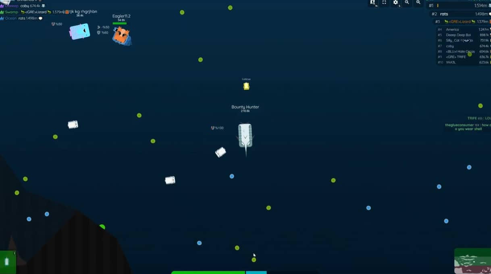
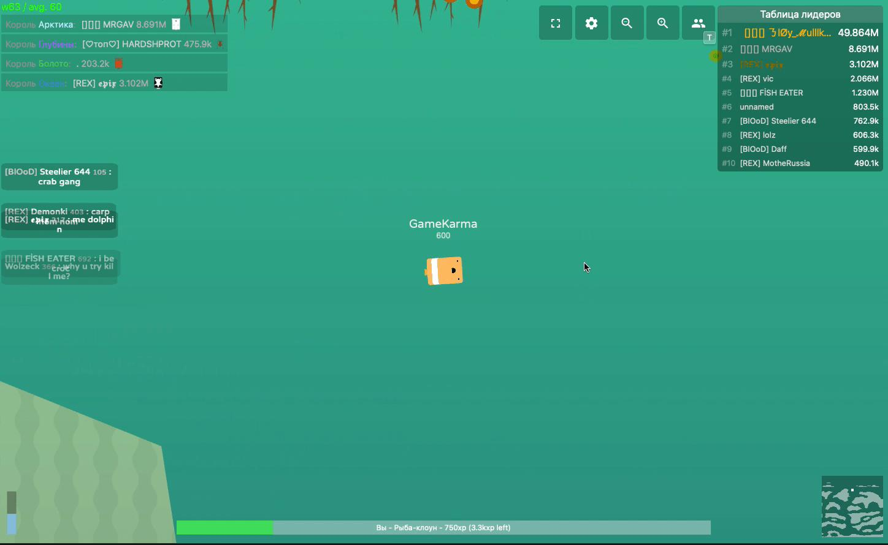
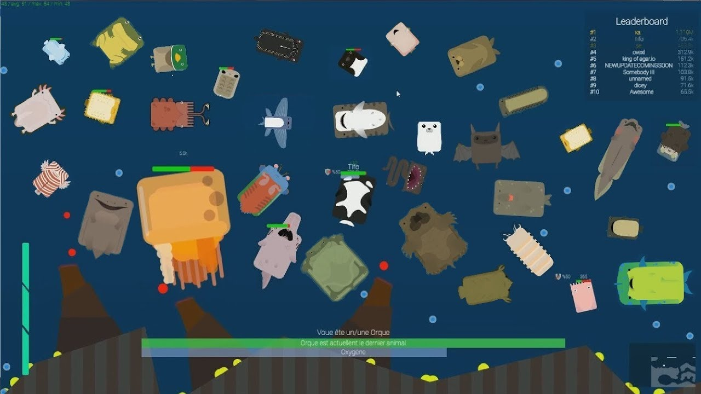

Deeeep.io is the ultimate underwater evolution and survival game where you start as a tiny clownfish and evolve through over 100 unique sea creatures. Created by Federico Mouse in 2016, this game features realistic ocean biomes, complex food chains, and strategic depth that goes far beyond simple eating. The moment I discovered I could evolve from a blobfish all the way to an orca, I was completely hooked.
🎮 Getting Started: Core Mechanics
Deeeep.io drops you into a vast underwater world as a small Tier 1 creature. Your goal is simple but deeply strategic: eat food, gain XP, evolve into stronger creatures, and survive long enough to reach the apex of the ocean food chain.
Controls
The controls are intuitive and responsive:
- Mouse — Move your creature toward the cursor
- Left Click / Space — Boost (uses energy for a speed burst)
- Right Click / W — Grab food or creatures (species-dependent)
Environmental Stats
Unlike most .io games, Deeeep.io adds realistic survival mechanics. Every creature must manage four environmental meters:
- Oxygen — Depletes when underwater; surface dwellers must breathe air
- Temperature — Arctic creatures take damage in warm water and vice versa
- Pressure — Deep sea creatures take damage at shallow depths
- Salinity — Freshwater creatures suffer in salt water and vice versa

Mastering these environmental constraints is what separates beginners from veterans. Always know your creature's biome limits before venturing into unfamiliar territory.
🌊 Understanding Ocean Biomes
The world of Deeeep.io is divided into distinct biomes, each with unique creatures, food sources, and environmental challenges:
Open Ocean
The most common biome with balanced conditions. Home to clownfish, crabs, squids, dolphins, and sharks. Ideal for beginners due to its forgiving environment and abundant food.
Deep Sea (Deeeep)
A dark, high-pressure environment filled with bioluminescent creatures. Anglerfish, barreleye, and giant squid thrive here. The deeeep generates the highest XP food, making it lucrative but dangerous for unprepared visitors.
Arctic
A cold biome with ice formations and igloos. Polar bears, narwhals, leopard seals, and penguins dominate. Temperature management is crucial here — warm-water creatures will rapidly lose health.
Swamp
A murky freshwater environment with unique creatures like frogs, piranhas, bobbit worms, and beavers. Different food chain dynamics apply, and many ocean creatures take salinity damage here.
Reef
Colorful coral formations provide excellent hiding spots for mid-tier creatures. The reef offers diverse small creatures and is particularly good for early-game leveling thanks to anemones and hiding places.

🧬 Evolution Tier System
Deeeep.io features a 10-tier evolution system. Each creature belongs to a specific tier, and you evolve by filling your XP bar through eating food and smaller creatures:
Tier 1-3: Small creatures (Clownfish → Crab → Jellyfish/Frog/Flying Fish)
Tier 4-6: Medium creatures (Squid → Seagull/Seal → Ray/Lobster)
Tier 7-9: Large predators (Anglerfish → Penguin → Dolphin/Mantis Shrimp)
Tier 10: Apex predators (Orca, Giant Squid, Whale, Shark, Crocodile)
Your evolution path depends on your starter creature. For example, starting as a Clownfish leads to Crab → various Tier 3 options → Squid → mid-tier creatures → apex predators. Starting as a Blobfish opens a different path through Piranhas. Choose your starter wisely based on your preferred playstyle and biome.
XP Farming Strategies
Efficient XP gain is critical for fast evolution:
- Sweep the seabed — Tiers 1-6 can sweep the ocean floor for fast food collection
- Meat is king — Meat from killed creatures gives the highest XP
- Flappy running — Sustain boosts while eating flying ducks for rapid leveling
- Deep food — The deeeep biome generates the second-highest XP food (after meat)
🦈 Best Creatures by Tier
Not all creatures are created equal. Here are the standout picks for each evolutionary stage:
Tier 1: Piranha (Best Starter)
The piranha offers the best early game. Its boost is a controlled dash (not a single burst), and cornering prey allows all piranhas to hit simultaneously. Stay in the swamp and eat until you can evolve. At Tier 6, stop evolving as piranha and jump straight to Tier 10 at 150K XP.
Tier 4: Squid
The squid's stealth ability is incredibly powerful. Standing still makes you invisible AND invincible (if you haven't taken damage in 3 seconds). Certain spots like pineapples auto-trigger the invisibility state. Avoid animals with suction attacks like frogfish and whales, as they can disable your ability.
Tier 5: Seal
Extremely fast with multiple movement options. Going to the seabed gives additional speed plus the ability to eat floor food. You can hide in igloos and turn invisible on arctic land. Hunt squids by starting with a boost to disable their invisibility.
Tier 9: Mantis Shrimp
The best ambush predator in the game. Its charge attack creates forelegs that deal 200 damage with stun. Pin opponents against walls for a devastating combo: stun → two hits → 400 damage total → repeat for 900+ damage. This can one-shot most Tier 9 creatures and even threaten some Tier 10s.
Tier 10: Orca (Killer Whale)
The most versatile apex predator. Orca can grab and throw prey, dealing high damage with excellent speed. Hunt aggressively in the open ocean and dominate through superior mobility and grab mechanics.

⚔️ Combat Tactics & Abilities
Combat in Deeeep.io revolves around bite damage, special abilities, and environmental awareness. Here are the core ability types:
Grab Abilities
Orca, Crocodile, and Giant Squid can grab and control prey. Drag opponents into dangerous areas (deep sea for pressure damage, arctic for cold damage). The crocodile's death roll is particularly devastating.
Stealth & Camouflage
Squid, octopus, and cuttlefish can become invisible. Octopus ink blinds enemies, making them lose track of your direction. Use transformation (octopus ability) to disguise as recently eaten creatures for ambush attacks.
Electric Shock
Electric eel and torpedo ray stun nearby animals. This works both offensively and defensively but drains energy. Use it to create escape opportunities or finish weakened opponents.
Poison
Stonefish and lionfish deal damage over time through contact. This creates area denial — predators think twice before chasing you. However, marlin and narwhal can counter poison users effectively.
Boost Tracking
This is the single most important combat skill. Always track when your opponent has boosts available. Save your boosts to dodge theirs, or use yours when they're depleted for a guaranteed advantage.
🛡️ Survival Strategies
Early Game (Tier 1-4)
- Focus entirely on eating safely — avoid all combat
- Stay in your appropriate biome to avoid environmental damage
- Use hiding spots (anemones, logs, bushes, coral)
- Evolve as quickly as possible to unlock better options
- Sweep the seabed for efficient food collection
Mid Game (Tier 5-8)
- Start hunting smaller animals while avoiding larger ones
- Learn and practice your creature's special ability
- Manage environmental stats proactively
- Choose your evolution path strategically based on preferred biome
- Practice hit-and-run combat tactics
Late Game (Tier 9-10)
- Hunt aggressively but watch for other apex predators
- Master your ability's full potential
- Control territory in your strongest biome
- Use terrain advantages (walls for pinning, deep sea for pressure)
- Make friends with same-species players for cooperative hunting
Don't be afraid to run away. In many cases, the best way to win is not to fight at all. Jump out of water and boost to traverse the map quickly. You can angle your exit to control distance, then re-enter the fight later or flee entirely. Master "flappy running" (sustaining boosts to eat ducks) for both fast leveling and map traversal.
💎 Pro Tips & Tricks
Learn to track boosts. If you learn nothing else from this guide, let it be this. Tracking when your opponent has boosts available is BY FAR the most important skill for 1v1 and FFA combat. Play around their boost availability.
Center control wins fights. Take stable center space before hunting knockouts. This gives you room on both sides and makes edge pressure your weapon instead of your problem. Most early eliminations happen to players who drift too wide too soon.
Heavy on contact timing. Stay light during approach, then switch to heavy right before impact. You keep better steering and still get strong knockback when contact lands. Delayed commitment hides your timing from skilled opponents.
Ambush low-health high tiers. If you see a higher tier animal with low health, don't hesitate to ambush them. It's high risk, high reward — but a successful kill can skip multiple frustrating evolution steps. Remember that Tier 1 animals cannot hurt Tier 10 animals.
Share meat with friends. When you kill a top tier animal, the meat can be shared. Give it to teammates rather than randoms — insane users will boost-grab more meat than you can handle. Cooperative feeding accelerates everyone's evolution.
❓ Frequently Asked Questions
What's the strongest animal in Deeeep.io?
No single "strongest" animal exists. Each apex predator excels in different situations: Orca is the most versatile surface hunter, Giant Squid dominates the deep sea with pressure advantages, Whale has massive health and suction power, and Crocodile rules the swamp with its death roll.
How long does it take to reach Tier 10?
Typically 30-60 minutes depending on your skill and playstyle. Aggressive hunting is faster but riskier. Safe farming through seabed sweeping and meat eating provides steady progress. Experienced players who make allies can reach Tier 10 in under 20 minutes.
Can I play with friends?
Yes! Join the same server and coordinate. Same-species animals often cooperate naturally — clownfish get speed bonuses near each other, piranhas attack as a pack, and Humboldt squids can spawn clones. Team play is encouraged but not enforced.
What happens when I die?
You respawn as a Tier 1 creature and start over. All progress is lost. This makes early game survival crucial — dying repeatedly wastes time. Learn predator patterns and always have an escape route planned.
How do I use special abilities?
Click or press Space to activate your creature's special ability. Each animal has unique mechanics — squids turn invisible when still, orcas grab and throw prey, electric eels shock nearby animals. Read your creature's description carefully to understand your abilities.
What's the best evolution path for beginners?
Start as a Clownfish (ocean) or Piranha (swamp). Both have straightforward paths with manageable creatures at each tier. The ocean path offers balanced gameplay, while the swamp path is more aggressive with piranha pack tactics.
📝 Related Games to Try
Enjoy underwater evolution? Check out Mope.io for land-based animal evolution, Dogod.io for another evolution arena, or LittleBigSnake.io for snake evolution with flying mechanics.
📝 Conclusion
Deeeep.io rewards patience, environmental awareness, and strategic thinking. Master your creature's biome limits, learn the evolution tree, and practice boost management. The ocean is vast and full of predators — but with the right knowledge, you'll be the one doing the hunting.
Dive deep, evolve fast, and become the apex predator of the ocean!
Last updated: June 20, 2026
Written by the iogameguide.com team